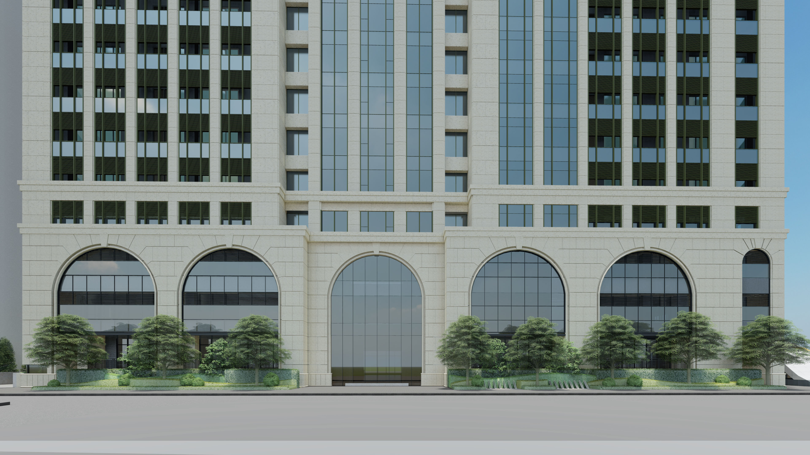
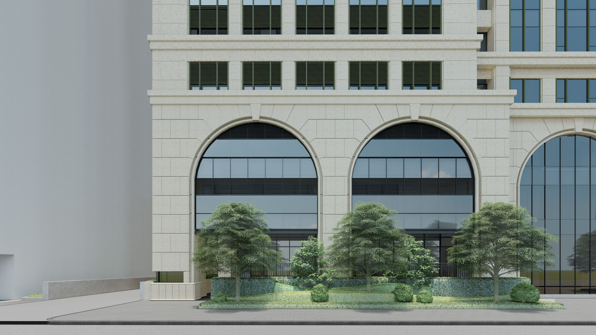
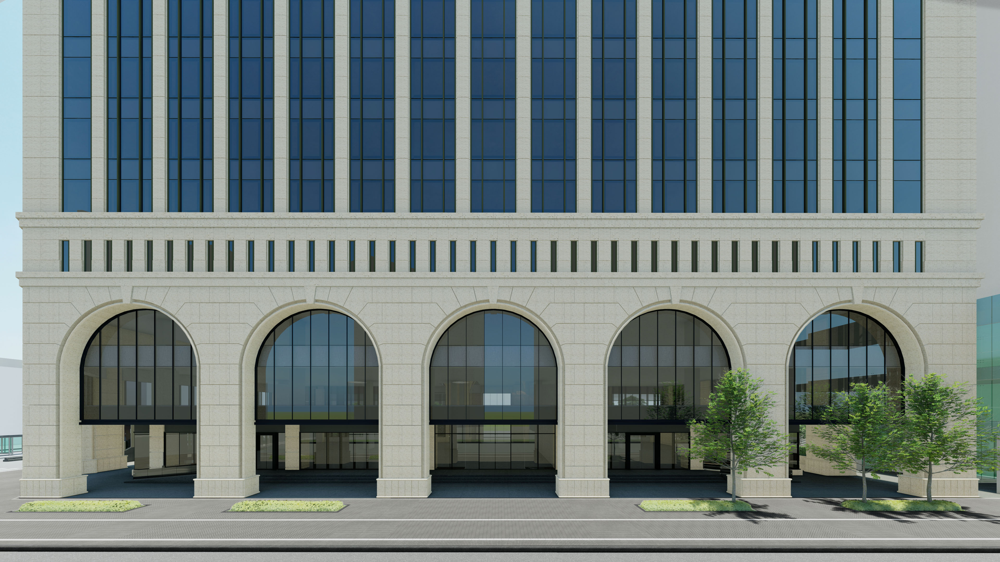

元大大同大樓
Commercial Landscape Design
Project Information
設計公司｜六國景觀設計有限公司
地點｜台北市
年份｜2019
職責｜專案助理
團隊｜蘇瑞泉、蔡瀞嬅、謝佳伶、陳稚沂、陳家玄、陳思婷
Design Description
風‧光‧水‧綠‧鬆 — 創造出生活空間的城市走廊
綠蔭散步道及休憩空間：
整體以帶狀公園概念設計，連續性的帶狀樹穴雙排行道樹空間，
植栽層次變化與簡潔的鋪面襯托建築的古典與外觀。
Perspective Renderings


